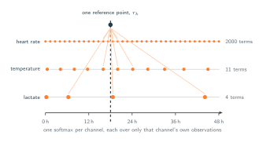
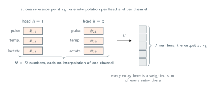

12 · Attention Over Time
Missingness Without Imputation
One softmax per channel, over only what that channel recorded.
As Section 08 explained, a model either processes the raw data exactly as recorded with misaligned timestamps and uneven list lengths or it demands a fully populated rectangular grid. Any system that builds that rectangle is forced to invent unmeasured data points that are permanently mixed with the real clinical numbers. It would be nice now to make this same verification into how the multi-time attention mechanism performs against this exact standard.
One Softmax per Channel
The whole answer is in the range of a sum. The weights at reference point $r_k$ for channel $d$ are
and that denominator runs to $L_d$, the number of observations channel $d$ has. Note how nothing is shared so far. Three channels means three separate softmaxes at every reference point, one over roughly two thousand terms, one over eleven, one over four. Each is a complete probability distribution in its own right, and none of them contains a term for a time when that channel was not measured.

This is what it means to handle missingness without imputing. There is no step at which the lactate is given a value for a minute it was not measured, and then that value is used. The question what was the lactate at $r_k$ is answered from the four lactate measurements that exist, and if our reference point $r_k$ falls in a stretch where nothing was drawn, the weights simply spread further out. The estimate becomes less certain, not more invented. Nothing is filled in because nothing is ever left empty to fill.
Where the Channels Meet
Something is still owed from section 04. If the model strictly interpolates every channel independently, it will inevitably fail to recognize coordinated clinical events. For instance, a simultaneous increase in pulse, temperature, and lactate. This inability to capture cross-channel relationships is the primary objection against channel independence. The solution is that the channels do eventually interact, but this integration occurs outside of the softmax function. This interaction relies on two key structural components:
-
Multiple Time Embeddings: The module utilizes multiple
parallel time embeddings rather than a single instance. These are
indexed by $h = 1, \dots, H$, and each possesses its own unique
frequencies and learned projections. Consequently, each head $h$
generates its own distinct kernel $\kappa_{h,d}$ and computes its
own independent interpolation $\hat{x}_{h,d}(r_k)$.
This multi-head architecture allows different heads to learn
distinct interpretations of temporal proximity. One head might focus exclusively on a narrow localized window
while another head might evaluate trends across the entire patient
stay.
![Three rows sharing one 48 hour axis, one row per head, for the lactate channel and a single reference point at 15 hours. Head one is a narrow bell centred on the reference point and its estimate is 4.60. Head two is a broad curve covering the whole stay and its estimate is 3.40. Head three peaks early and has fallen to nothing by the reference point, and its estimate is 2.85. Below the three rows, the four lactate readings 2.4, 3.1, 4.6 and 2.8 are marked on the axis, and a vertical stem on each row shows the weight that head gives to each reading.](../figures/build/multi_head_kernels.svg)
One reference point, one channel, three heads. The vertical lines are the weight each head puts on each reading, and the numbers on the right are what those weights produce. - The Learned Tensor $U$: The mechanism introduces a learned tensor $U$ that aggregates these varied interpolations at a specific reference point into a final output vector of width $J$:
Read the two sums. The one over $d$ is where the pulse, the temperature and the lactate are finally combined, and the one over $h$ is where the different notions of closeness from the multiple $H$ heads are combined with them. Every output number is a weighted mixture of every channel under every kernel, so the joint climb from section 04 has a place to be represented after all.

That figure says where the mixing happens; the next one says what the mixing is. Take a single output coordinate, $j = 3$, and follow it from the interpolations to the number that leaves the module.
![The tensor contraction drawn as an architecture diagram at H equals two, D equals three and J equals five, following output coordinate j equals three. Top: the tensor U drawn as five stacked H by D slices, one per output coordinate, with slice three pulled to the front. Middle, left to right: the two by three grid of interpolations x hat h d at the reference point, an elementwise product symbol, the two by three slice U h d 3, an arrow labelled add up all six products, a single output cell, and the five-entry output vector with entry three highlighted. One matched pair of cells is shaded in both grids and joined by a dashed line. Below, the two grids are labelled: what the record says, and what the model learned.](../figures/build/mixing_u_detail.svg)
The specific timing of this integration is more critical than the channel mixing itself. The channels intersect only after interpolation, which completely eliminates the requirement for prior alignment. This design ensures that no channel must borrow a timestamp from another to enable combination. While section 04 framed architectural decision as a binary choice between mixing and independence, this approach represents a hybrid solution. The channels remain strictly independent precisely when alignment would have caused distortion, and they operate jointly for all subsequent processing steps.